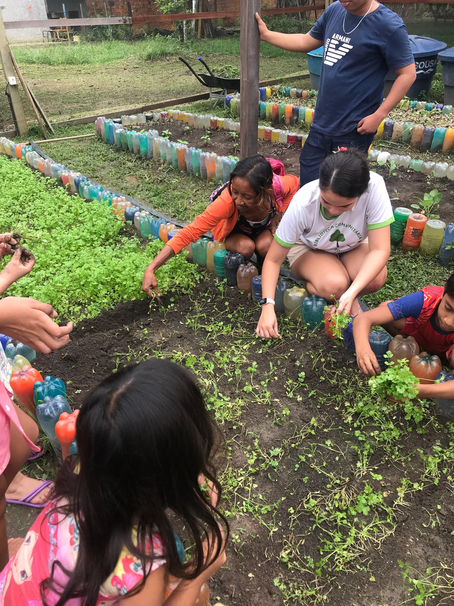
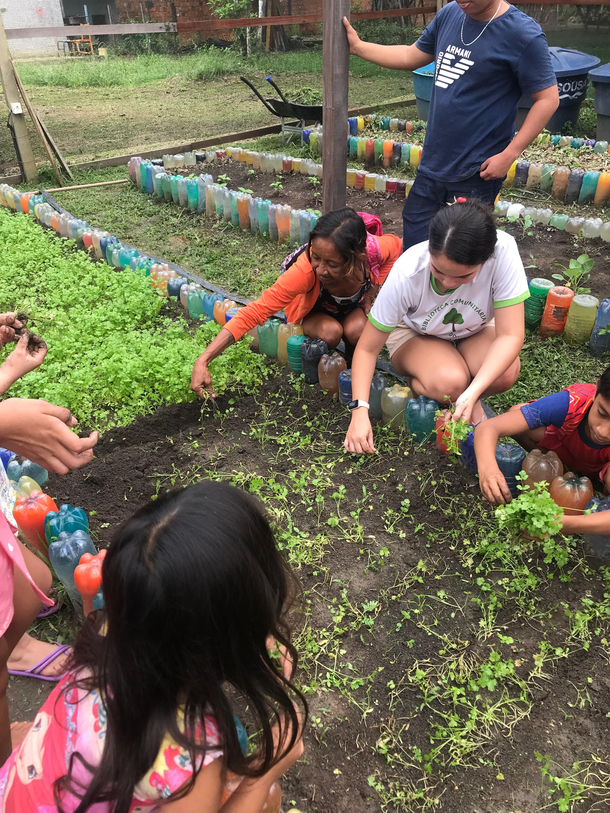
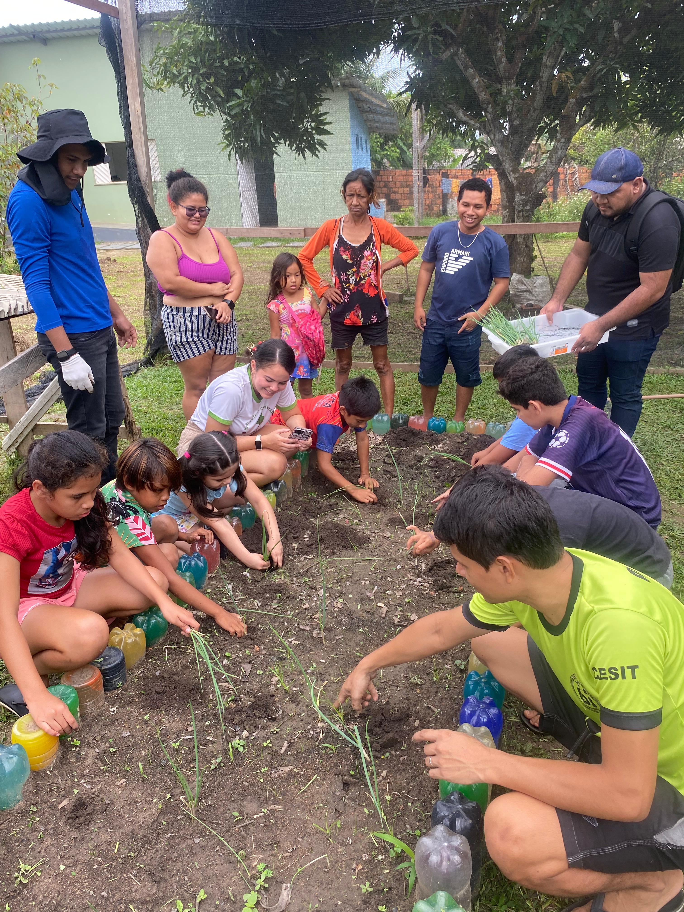
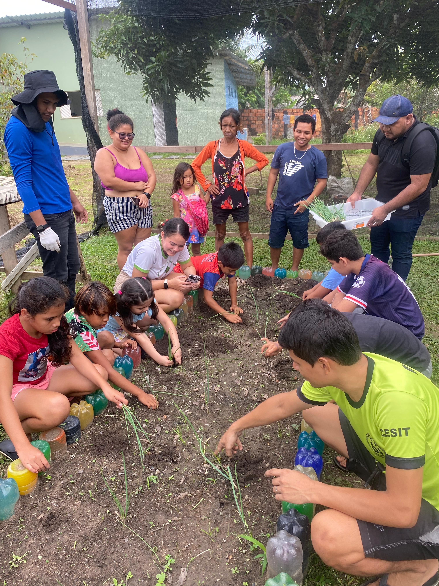

ECOCOMUNIDADE
Promovendo a sustentabilidade e a preservação ambiental em comunidades urbanas e rurais
Sobre o Projeto
O ECOCOMUNIDADE é um projeto do LDS que visa promover a sustentabilidade e a preservação ambiental em comunidades urbanas e rurais, através de ações educativas, práticas sustentáveis e engajamento comunitário.
Objetivos
- Promover a educação ambiental nas comunidades
- Implementar práticas sustentáveis no dia a dia
- Engajar a comunidade em ações de preservação
Atividades
O projeto envolve diversas atividades, incluindo oficinas, palestras, campanhas de conscientização e ações práticas de sustentabilidade para transformar comunidades.
Notícias do Projeto
Acompanhe as últimas atualizações e atividades do projeto ECOCOMUNIDADE


Plantar e reciclar: uma combinação perfeita!
Reutilizando garrafas PET, unimos coleta seletiva, compostagem, horticultura e reutilização de resíduos em nossos canteiros.
Primeira Colheita do Projeto
Celebramos a primeira colheita de hortaliças do nosso projeto de horta comunitária, demonstrando como a agricultura urbana pode transformar espaços ociosos em fontes de alimento saudável.


Terceiro Replantio Realizado
Terceiro replantio realizado pelo grupo da eco comunidade juntamente com os bolsistas da comunidade Chico Xavier.


 

 

Estudantes do Curso de Engenharia Florestal
Estudantes do Curso de Engenharia Florestal, coordenados pelo Prof. Me. Daniel Campos, estão realizando diversos projetos na Biblioteca Comunitária Maria Dolores, localizada no Município de Itacoatiara-AM.
Dentre os projetos em destaque, destaca-se o Projeto de Horticultura Orgânica, que tem como objetivo auxiliar a comunidade na condução de uma horta orgânica comunitária e, concomitantemente, abordar aspectos fundamentais da questão ambiental por meio de ações de educação ambiental.
Conheça a Biblioteca Comunitária Maria Dolores, localizada na rua Padre Calebe, 3725 - Mamoud Amed, Itacoatiara-AM.
Prática de Semeadura
O curso de horticultura promoveu uma prática de semeadura, incentivando a sustentabilidade e o cultivo consciente.